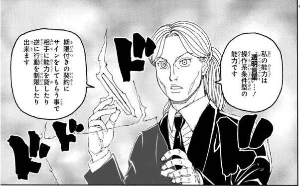

ロンギ
- 登録名
- ロンギ
- 分類
- 兵士
- 初期配置（現在地ではありません）
- 第1層 1005号室
初期配置は台帳の当初の担当先です。後任の人物や復元枠も含み、全員の出航時の在室を示すものではありません。後の展開は下の折りたたみにまとめています。
人物詳細（後の展開を含む）
- 状態
- 存命
- 所属
- ドゥアズル陣営（第2王妃所属兵）
- 役割
- 第2王妃ドゥアズル所属兵／第5王子ツベッパ警護（念講習会参加者）
- 任務
- 護衛
- 最後の所在
最後に登場した場面：第370話（場所は推定：第1層 1014号室）
場所を確認できた最後の記録：第369話 第1層 1014号室
ほかの関係記録（本人の在室は未確認）
- 第401話 第1層 1014号室（4件）
- 念使用の確認
- 念使用：確認済み
- 念系統
- 操作系（ロンギの申告）
- 念能力
- 〝透明言葉〟：操作系条件型。期限付きの契約に自発的に署名してもらうことで相手に能力を貸したり行動を制限したりできる。誓約と制約を兼ねて、相手に嘘偽りなく先に説明する必要がある。
- 第401話で示された第5王子と第14王子・第8王妃の和平協定の条件では、違反した側に一週間の強制的な〝絶〟が課される。条件を満たした相手には『賞与』としてこの能力を一度だけ使わせる。口内には凝で見える目のような呪いの『印』があり、本人は自分を『強い詛贅者』と説明する（印と〝透明言葉〟の関係は未確定）
家族関係
- [親子] ビヨンド＝ネテロ（親）

編集状況
- 人物ID：P05-G01
- 状態の確認話数：未登録／根拠の出来事：未照合
- 能力欄の編集注記：能力名のルビは判読不明。
- 公開データの登録情報から生成したページです。個人メモ・編集内容・調査記録は含めません。
- 一覧の詳細でメモ・編集
情報源：公開人物台帳・公開出来事台帳。